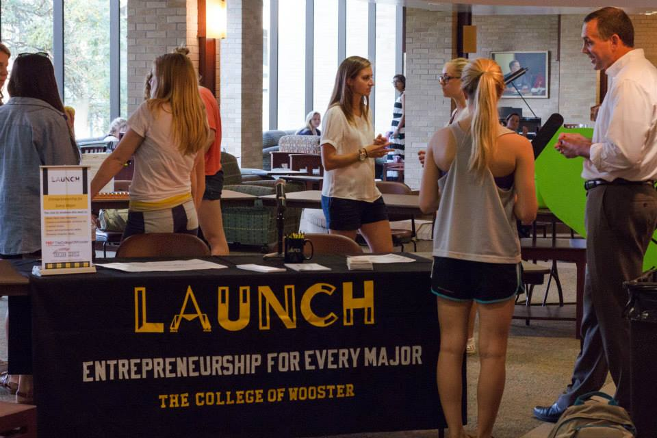

Launch Club

Join the student Entrepreneurship Club known as Launch. Launch brings entrepreneurs to campus, helps students develop their own start-up ideas,
organizes company tours, and manages TEDxWooster.
About Launch
Launch is the student entrepreneurship club for every major.
The purpose of the club is to support students who want to:
-
Start new ventures
-
Create solutions to problems
-
Connect to regional resources
-
Network both on and off campus
Club Initiatives
Launch is involved in many initiatives. Including:
-
Host TEDxWooster
-
Host the Idea/Business Model Competition
-
Bring entrepreneurs to campus
-
Organize visits to regional businesses
-
Partner with the city on a revolving loan fund
-
Collaborate with students on the creation of new businesses